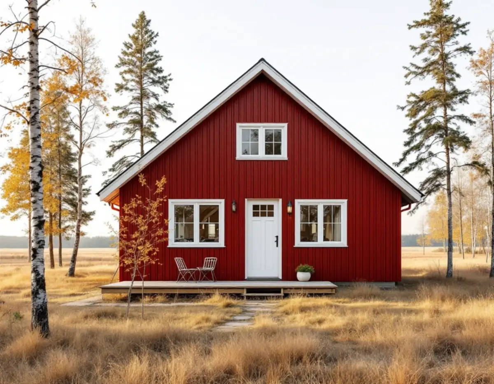
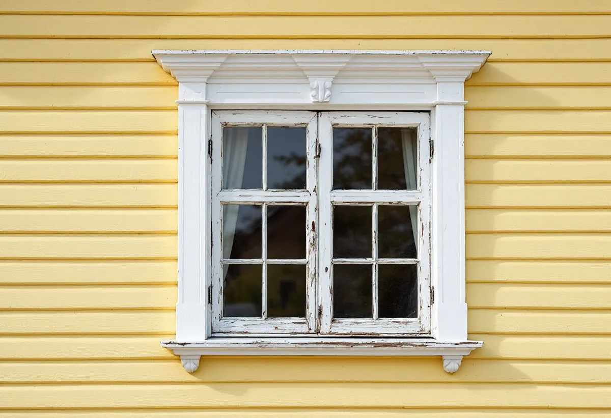

Besök på plats
Vi går igenom väggens uppbyggnad, sockel, takfot och fönster och öppnar panelen där det behövs.
Många hus i Vallentuna byggdes för ett annat liv än det de har i dag: villor vid Roslagsbanans stationer och fritidshus som blivit permanentbostäder. Fasaden är ofta det som först visar att huset används mer än det var tänkt. Geal Entreprenad AB renoverar fasader i hela Vallentuna kommun, med gratis platsbesök och skriftligt kostnadsförslag.

Vallentunas översiktsplan 2040 beskriver hur gränsen mellan permanent boende och fritidsboende blir allt mer flytande, eftersom allt fler bosätter sig i sitt fritidshus eller använder det en större del av året. Sedan 1990-talet har de flesta fritidshusområden i kommunen omvandlats, framför allt som en del av tätortsutvecklingen.
Utanför tätorterna finns två större områden som är planlagda för fritidsboende. Det största är Garns-Ekskogen i östra delen av kommunen med omkring 500 bebyggda fastigheter, där detaljplanerna till största delen ger en byggrätt på 50 kvadratmeter för huvudbyggnaden. I Lövsättra i södra delen finns en stugby med ett 90-tal bebyggda kolonilotter.
Ett hus som byggdes för sommarbruk har ofta en enkel vägg: panel direkt på regelverket, tunn eller ingen isolering och små takutsprång. När det värms upp hela vintern förändras fuktförhållandena i väggen, och då märks bristerna.

Boverket skriver att utvändig tilläggsisolering ofta är bäst för både energi och fukt, eftersom den befintliga väggen blir varmare och torrare. Myndigheten råder också till att isolera när det är torrt väder för att inte stänga in fukt, och att först åtgärda orsaken om det finns mögel eller röta.
I ett litet hus med begränsad byggrätt är utvändig isolering dessutom ett sätt att behålla rummen som de är. Invändig isolering minskar boytan och gör väggens utsida kallare. En utvändig lösning ändrar i stället husets yttre mått, och Boverket påpekar att ett hus som står nära fastighetsgränsen kan komma att inkräkta på grannens tomt. Det stämmer vi av innan något beställs.
Ny panel monteras med luftspalt bakom, så att vatten som tar sig förbi kan rinna ut. Takfoten kan behöva förlängas när väggen blir tjockare, annars hamnar mer regn på fasaden. Om stuprör och hängrännor ska bytas samtidigt, se hängrännor och stuprör.
Enligt översiktsplanen började en ny tid 1885 när Roslagsbanan invigdes mellan Stockholm och Rimbo. Banan byggdes för att försörja Stockholm med jordbruksprodukter och andra varor, och kring stationerna växte samhällen fram med villabebyggelse. Planen beskriver hur tidstypiska byggnader, tomtstorlekar och kvartersindelning där ofta bildar tydliga årsringar.
En villa från stationssamhällets tid har ofta snickeridetaljer som är svåra att få tillbaka om de rivs: profilerade foder, knutlådor och vattbrädor. Vid en fasadrenovering tar vi ner dem varsamt, lagar det som går och tillverkar nytt efter mall där det behövs. Översiktsplanen säger att förändringar av kulturmiljöer kräver förståelse för platsens historia, karaktär och funktion.
Boverket skriver att byte av fasadbeklädnad till samma material och utförande är underhåll och inte en fasadändring. Det är oftast den väg vi rekommenderar på de här husen. Panelens bredd, profil och riktning mäts upp innan något rivs, så att det nya virket blir lika.
Vallentuna kommuns digitala bygglovsarkiv innehåller ritningar över byggnader som uppförts ungefär mellan 1950 och 2024. Cirka 75 procent av handlingarna är digitaliserade och resten skannas in löpande. Fasadritningen i skala 1:100 visar hur huset såg ut när det byggdes, och äldre handlingar kan beställas.
Kommunen skriver att det inte krävs bygglov för fasadförändringar som ommålning, nytt tak eller nya fönster på en- och tvåbostadshus, men att lov krävs om fastigheten ligger inom ett kulturhistoriskt särskilt värdefullt område eller om byggnaden är särskilt värdefull. En ansökan ska då innehålla situationsplan, fasadritning i skala 1:100, redovisning av material och kulörer med NCS-koder och kontrollplan.
Vi går igenom väggens uppbyggnad, sockel, takfot och fönster och öppnar panelen där det behövs.
Vi tar fram ritningar ur bygglovsarkivet och kontrollerar detaljplanen och husets placering mot gränsen.
Panel, isolering, takfot och fönsteranslutningar redovisas var för sig i ett skriftligt förslag.
Ställningen sätts upp och fönster och planteringar skyddas.
Vindskydd, isolering och ny panel med luftspalt monteras, och detaljer lagas eller tillverkas efter mall.
Vi går igenom resultatet med dig på plats.
Att byta och reparera fasader, tilläggsisolera och montera byggnadsställningar i samband med rotarbete ger rotavdrag i småhus. Det gäller både permanentbostaden och ett fritidshus som du äger och använder.
Avdraget är 30 procent av arbetskostnaden, högst 50 000 kr per person och år och högst 75 000 kr tillsammans med rutavdrag. Material och resor ingår inte. Geal drar avdraget direkt på fakturan.
Hur väggen är uppbyggd i dag, om den ska isoleras, om takfot och sockel behöver byggas om och hur många snickeridetaljer som ska lagas eller tillverkas på nytt. Även tillgängligheten till tomten och avståndet för materialtransporter påverkar. Du får ett skriftligt kostnadsförslag efter ett gratis platsbesök.
Puts, panel och tilläggsisolering.
Fasadrenovering i Stockholm →Takbyte, takbesiktning och plåtarbeten.
Takläggare i Vallentuna →Villaområden och gårdar.
Takrenovering i Vallentuna →Inom eller utanför plan, avlopp och brunn.
Attefallshus i Vallentuna →Nytt våtrum, Roslagsvatten och egen brunn.
Badrumsrenovering i Vallentuna →Ritningar, grannar och kommunens mark.
Byggföretag i Vallentuna →Villor och grupphus från 1970-talet och framåt.
Fasadmålning i Vallentuna →Flygbuller, glasval och lov i Vallentuna.
Fönsterbyte i Vallentuna →Fönster i tegelvillan, fog och bågar.
Fönsterrenovering i Vallentuna →Golv på platta och golvvärme i villan.
Golvläggare i Vallentuna →Slipa och laga gamla golvplank.
Golvslipning i Vallentuna →Utbyggda kök, villor och gårdar.
Köksrenovering i Vallentuna →Gårdar, fritidshus och villor i Vallentuna.
Målare i Vallentuna →Rännor, plåttak och uthus i Vallentuna.
Plåtslagare i Vallentuna →Uthus, uterum och fritidshus.
Snickare i Vallentuna →Lovfrågan, skorstenen och arkivet.
Takbyte i Vallentuna →Ritningar, nivåer och arkivet.
Tillbyggnad i Vallentuna →